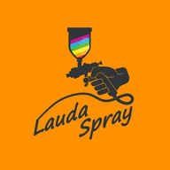

LAUDA SPRAY
Facebook 公众主页
点击下面按钮，进入 Lauda Spray Facebook 主页。
打开 Lauda Spray Facebook如果手机已安装 Facebook，iPhone 可能会直接交由 Facebook App 打开；否则会在浏览器中打开。

点击下面按钮，进入 Lauda Spray Facebook 主页。
打开 Lauda Spray Facebook如果手机已安装 Facebook，iPhone 可能会直接交由 Facebook App 打开；否则会在浏览器中打开。